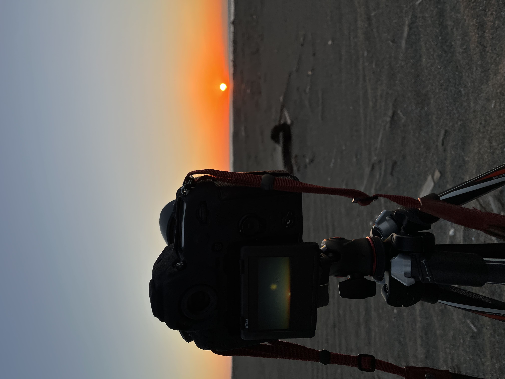

写真
Picture

写真歴12年 （↑写真 沖縄県南城市 ニライカナイ橋）
中学の修学旅行で沖縄の美しい景色を残したかったがカメラを持っていなかった
心残りがあったため翌年デジカメを買ったのが始めたきっかけです。
朝焼け夕焼けの写真が得意です。
風景の中でも特に原生林や大自然が好きで全国の国立公園や景勝地を周っています
機体とレンズ
NikonD850
NikonD7000
Nikkor24-70mm
Nikkor105mm （Micro）
SIGMA 18-300mm f3.5-
TOKINA 11-16mm f2.8-

写真作例
タイトル入力
※カルーセルに沿ってタイトルと撮影情報（簡易に）＋説明文に切替え、カルーセルに載せるものは最新順
TEITEN

タイトル入力
写真は固定、定点写真が撮れたら更新